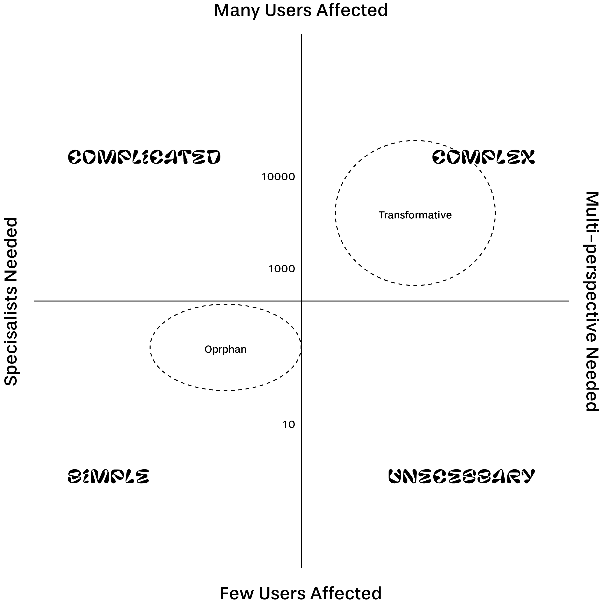

Turning public sector organisations into flexible, balanced operations with purpose and meaning is possible. In the article “Flexible institutions for a fast-changing world” we said how the beginning of the transition consisted of infusing teal into specific aspects with a limited scope — perhaps starting with a small team, testing things out with a single project or experimenting with different types of relationship. In this second part, we take a more in-depth look at the full roadmap and deal with the most frequent challenges. Fortunately, there are others who have walked this path before and are willing to share their experiences.
In all the stories of transformation of public administrations into more flexible organisations with a living purpose, there exist challenges. Some of which are very common. In this case, we have identified the five main challenges and, using real case studies, we can explain different strategies for overcoming them. We have learned about their stories of survival either because we have interviewed them in-person or because they are international benchmarks and their experiences are widely known. So let’s take a look at the adventures of Dídac Ferrer with the Nexus 24 initiative at BarcelonaTech (which we already mentioned in the post Flexible institutions for a fast-changing world); of Frank van Massenhove, Chairman of the Federal Office of Social Affairs in Belgium; and of Anja van der Horst, Director of Operations of the Hollands Kroon municipality (2012-2017).
More than a challenge, this is a fixed value — one of the constant principles in any public sector organisation. Organisational changes are, by definition, slow; they spread outwards over time and require a lot of trust in those behind implementing the change. However, the public sector is designed with a short-term perspective, clearly linked to its dependence on political and legislative changes. It’s strange how environments as static and permanent as public sector organisations are at the same time unstable given their sensitivity to political shifts. This boils down to the fear of striking out in a direction that could change from one day to the next and the need to think in terms of three — or four-year periods.
This is why everything hinges on the people driving the change — the technical leaders, not politicians, capable of injecting enthusiasm and inspiration down through the organisation, at the same time gaining the trust of people of all political leanings and parties. To spearhead change in such a situation is tiring work, like a long-distance race in which victory is generally a team effort. It requires the support of both the most senior levels of the organisation as well as the enthusiasm, support and backing of a motivated team that creates a microclimate of conviction in the change.
Shifting from a rigid, hierarchical structure based on obedience to an organic, collaborative structure based on self-management is no simple matter. In both the Dutch and the Belgian cases, self-management was implemented from the top down, changing the structure and simplifying it in two layers: a layer of “mentors” who lead the new way of working and a second layer of autonomous, self-managed teams. Frank van Massenhove was clear on the matter from the start: the dynamic of hierarchy and obedience needs to give way to the principles of freedom and responsibility.
In the case of Nexus24, it wasn’t possible to change the structure, and so the same formal structure has been left in place while informal collaborative networks are generated beneath it. The presence of these two structures simultaneously is what is known as a “dual structure”. The strategy is based on leveraging spaces within the system without destabilising it. In other words, for example, that Nexus24 should be a training programme and not a differentiated “work” activity. The projects are organised in the form of challenges, and those that respond to the innovation challenges included in the university’s governance plan as well as having the support of the community are developed. To attract support to the projects, an internal platform (impulsa.upc.edu) has been created, based on Goteo and crowdfunding logic, where, instead of contributing money, each person can decide whether to support the project and also whether to get involved as a participant, facilitator or sponsor.

Changes are closely associated with fear, loss of control and uncertainty. In general, public organisations have a political layer that limits resources and demands short-term results, followed by a layer of middle managers who are the go-betweens between the politicians and the implementers. These managers may be fearful of losing their decision-making powers, while also having to shoulder the burden of any changes. In organisations that are in the process of changing, their roles and positions bear little resemblance to when they first accepted the job. And the fact is that it is neither natural nor compulsory that they support these changes, meaning that in some cases it will be possible to modulate their resistance, while in others a way out must be offered if the person cannot understand or support a system of self-management. This is how they did it in Hollands Kroon — by redefining the roles of the nine middle managers, of which seven settled into a new position and two decided to leave. The most immediately visible result is that when everyone is pursuing the same goal, change can be implemented much more quickly, something which is also reflected in the financial results.
The Nexus24 team has taken a different path. As regards the management, they have opted to win them over with the results obtained (often related to greater economic efficiency) and offer new services for the collaborative transformation of units. In terms of the participants from the educational side of things, they have created a narrative that allows people to understand what they are doing, where they are situated and what the project is about. The key concepts for defining this way of working include: a) flexible work; b) design thinking; c) networking; and d) communication. The existence of this dual logic has generated contradictions in the day-to-day work, although at the same time spaces have been created for the ongoing implementation of all the key learnings.
In the words of Gordon Forward, former CEO of Chaparral Steel, “managing for the 3 percent. It implies that we often create rules to control the small number of nonconforming employees who might misuse their autonomy, while suppressing the innovation and creativity of the 97 percent who just want to do a good job”.
At Hollands Kroon, the drive towards less bureaucracy reduced absenteeism and saved millions of euros in the first year. Turning away from bureaucracy means freeing yourself from dozens of rules that regulate even the simplest of tasks, making processes cumbersome and less flexible. The basic aim of all these rules is to ensure orderly management in any situation, to generate a wide comfort zone. However, there are always situations that diverge from the norm and, in the absence of any rules, the result is a vacuum of paralysing uncertainty. They drew up an inventory of all the rules in place and did away with 70% of them. Not only those for civil servants, but also those related to municipal by-laws. They opened the door to creating more responsible citizens, with greater creativity and initiative. Their slogan is “Organisation is quite simple. Just get rid of the rules”.
They opted to replace rules with something much more profound, versatile and less restrictive — values. These still allowed a clear direction and focus. What’s more, no one wants to enforce rules — it’s alienating, and they are only enforced because they are “imposed from above”. Values, on the other hand, work more as inspiration, defining the boundaries of the field of play but without dictating the tactics. At the same time, the team shares and nurtures an environment of trust, courage, enthusiasm and respect, something which brings them together.
It’s clear that a change like this may well pass through periods of anarchy, or generate chaos, and errors will certainly arise sooner rather than later. So it’s essential, when accompanying such a change, to take a step back, stop interfering to create room for autonomy, and to know how to tackle errors. This is the most difficult part of self-management, even for Anja van der Horst, who, on a daily basis, has to overcome the temptation to explain when things are going wrong.
Nexus24's Dídac Ferrer metaphoric presentation on team training using example of a mammoth.
Within the process of transformation, who backs it is just as or even more important than who drives it. Organisations are people, who use their talents in accordance with the rules or values. When these are known, shared and strengthened by everyone, it’s much easier to make the transition. Along the path to change, there are always cases of strong resistance, people who get disorientated between one point and the next and people who embrace the change and know how to fit in straightaway.
When a public sector organisation decides to focus on resilience, responsibility, collaboration or intraentrepreneurship, it’s speaking a language that generally sounds strange to those who entered the organisation looking for stability. It’s easier to convert those who are motivated by their dedication to service, as they will always understand that if public needs evolve, they themselves must also evolve. This shift is for the intrepid or those who need a good change.
Dídac Ferrer told us how Nexus24 has managed to connect with technical and administrative staff without junior staff under them who needed to widen their scope of action. Tedium and promotions that never come were the day-to-day reality of the average 50-year-old civil servant, skilled but at a complete dead end. When they were offered a way towards professional development, they saw a motivating alternative.
The path chosen by Frank van Massenhove in Belgium is to attract and capture young talent, and he’s doing so by changing some of the basic premises of work dynamics. This includes exploiting technologies to create much more flexible work environments that favour a good work-life balance. It doesn’t matter if you enjoy a sunny Wednesday off work, because you’ll work more happily when it rains on Sunday. There’s room for innovation, turning away from useless, inefficient tasks, and everything is measured in terms of objectives and results. Of the average 30-hour working week, 80% is spent on preestablished tasks and roles, while 10% is for working on innovation projects and another 10% for unexpected tasks. These are cultural changes that are much more aligned with the millennial perspective on the world of work and public administration in general.
Any journey has its challenges and being aware of them before setting off always helps. You’ll still encounter them, but you’ll know how to identify them. If you’re also familiar with the experiences of others who have taken the same path before, you’ll be able to learn from their errors and ideas.
What we can learn from these case studies is that there are two factors that help this type of public sector organisation to undertake a more successful shift towards teal.
Firstly, their leaders must have a clear vision and be capable of understanding and adapting to the real context where the change is to be implemented. It’s not so important whether you start from the top or the bottom — the key is to manoeuvre in as balanced a way as possible between what already exists and what needs to be achieved. And let’s not forget that there’s no one-size-fits-all, because each case is a unique combination of the scope and nature of the organisation (a town council is not the same as a university or ministry), the previously-existing inertias and the degree of autonomy with regards political considerations.
If the change is initiated from above, where vision and decision-making go hand-in-hand, it’s possible to implement changes more quickly. If the change is bottom-up, the key is to support the vision with the capacity to create parallel spaces and make use of any cracks.
Secondly, building a culture that is aligned with the change in order to attract the right people – the key players that will allow a teal culture to flourish within an organisation. This means unlearning years of beliefs and ways of doing things and avoiding falling into rigid patterns that could curtail the freedom and responsibility of the teams.
Ultimately, the path towards change is a long-term commitment involving both substance and form. There will be many moments along the way in which, if the goal is not kept in mind, the will to give up will overcome the will to fight. However, it is without a doubt a period of transition in which resilience, daring and the ability for reinvention are key.
Anouk Groen. Managing Without Managers: Shaping Management Control in SelfManaging Organizations. How to Overcome Challenges of Job Autonomy? Radboud University Nijmegen, 2018.